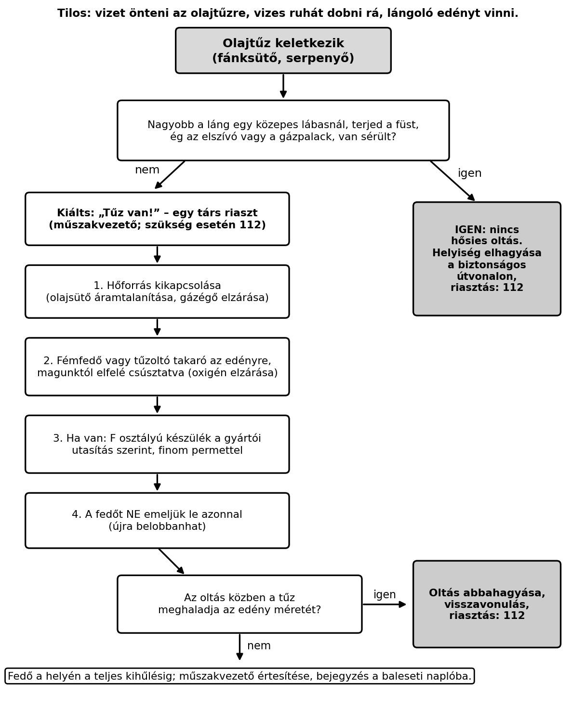

A cukrászműhelyben egyszerre van jelen forró zsiradék, gáztűzhely, elektromos gépek, por, cukor és sok, egymással sürgő mozgó ember. Egy pillanat alatt alakulhat ki olajtűz a fánksütőnél, gázszivárgás a tűzhely környékén vagy egy vendég dióallergiás rohama a tálalóban. Az elméleti higiénia csak akkor ér valamit, ha a dolgozó azt is tudja, hogyan állítsa meg a bajt, és hogyan lássa el sérült társát, amíg a segítség megérkezik.
A tűz nem statikus esemény. A beavatkozónak először fel kell mérnie, mekkora a tűz, milyen anyag ég, van-e saját és mások élete veszélyben, van-e megfelelő oltóeszköz. A cukrászüzemi sorrend ezért: életvédelem – a környezet riasztása – kísérlet a kezdeti tűz oltására – visszavonulás és 112, ha a tűz nem csökken vagy terjed. Nagy tűznél a menekülés és a 112-es hívás az első.

A fenti folyamatábra lépéseit szavakban is meg kell jegyezni: ha a láng nagyobb egy közepes lábasnál, ha a füst terjed, ha a gázpalack vagy elszívó is ég, ha van sérült, akkor nincs helye hősies oltásnak. Azonnali riasztás és a helyiség elhagyása a biztonságos útvonalon. A kis tűz ágán is riasztással kezdesz (kiáltás, egy társ értesíti a műszakvezetőt); ha az oltás közben a tűz nem nő, a fedő a teljes kihűlésig a helyén marad, és az esetet a baleseti naplóba is bejegyzed.
Definíció. Égés. Az égés éghető anyag, oxigén és megfelelő hőmérséklet együttes hatására beinduló, hő- és füstfejlődéssel járó kémiai reakció. A tűzoltás alapelve, hogy a három feltétel közül legalább egyet megszüntetünk: elvesszük az éghető anyagot (elzárás), az oxigént (fojtás) vagy a hőt (hűtés).
Szabály. Tűzosztályok. A tűzoltó készülékeket és a tűzoltás módját az égő anyag fajtája szerint soroljuk be. A cukrászüzemben legfontosabbak:
| Tűzosztály | Égő anyag | Jellemző cukrászüzemi példa |
|---|---|---|
| A | szilárd anyagok, jellemzően izzással égők | papír, fa, karton, textil, cukor |
| B | éghető folyadékok | alkohol (párlat, aroma), oldószer, benzin |
| C | éghető gázok | földgáz, PB-gáz |
| D | éghető fémek | (cukrászüzemben ritka) |
| F | sütőberendezésben levő étolaj, -zsír | fánksütő, serpenyő |
A tűzoltó készülékek címkéjén betűk jelzik, melyik tűzosztályra alkalmasak. Az étolaj- és zsírtűz (F osztály) a mennyiségtől függetlenül külön osztály: az étolajat, zsírt nem a B osztályba soroljuk. A besorolást és a kiválasztást a hatályos tűzvédelmi műszaki irányelvek és a gyártói adatlapok pontosítják (ellenőrizendő: MSZ EN 2 hatályos változata, aktuális tűzvédelmi műszaki irányelv, készülék-szabvány).
A fánksütőben vagy serpenyőben túlhevített olaj először füstöl, majd elérheti a gyulladási hőmérsékletet, és meggyullad. Az olajtűz különösen veszélyes, mert
Tilos. Olajtűzre vizet önteni, vizes ruhát dobni, vagy a lángoló edényt kézben a csaphoz vinni.
Szabály. Olajtűz oltásának sorrendje. Kisebb, edényen belüli olajtűznél:
A képsor a takaró használatát mutatja: először elzárod a hőforrást (1), a takarót a két szalaggal húzod ki a tartóból (2), a felső szélét a kézfejedre hajtod, így a takaró a kezedet és az arcodat is védi (3), majd elölről hátrafelé, magadtól elfelé fekteted az edényre (4). A takarót nem emeled fel, a teljes kihűlésig a helyén marad (5). Az áthúzott kép (6) a tiltott mozdulat: a vízzel oltás.
Ezt a sorrendet a Gyúrt és kevert élesztős uzsonnasütemények; a fánk alfejezetben is alkalmazzuk, mert a fánksütő olajfürdője a cukrászüzem egyik legkritikusabb tűzveszélyes pontja.
A gáztűzhely és a gázsütő csak akkor üzemeltethető biztonságosan, ha
Szabály. Gázszivárgás gyanúja esetén. Ha gázszagot érzünk, ne gyújtsunk gyufát, ne kapcsoljunk villanyt, ne húzzunk ki dugót, ne működtessünk csengőt. Kapcsoljuk le a villanyóránál vagy a biztosítéknál az áramot, ha az kapcsoló nincs a szaggal telített légtérben; zárjuk el a gáz főcsapját; szellőztessünk; hagyjuk el a helyiséget; a szabadban hívjunk segítséget a 112-es számon. A visszajutást a tűzoltóság vagy a gázszolgáltató engedélyéig tilos.
Szabály. Villamos tűz. Villamos berendezés, sütő, dagasztógép, hűtő vagy olajsütő tüze esetén:
A riasztást minden esetben a 112-es egységes segélyhívó számon kell megtenni. A hívásban mondjuk el a pontos címet, a tűz helyét, mi ég, van-e sérült, van-e gázpalack vagy más veszélyes anyag, és a hívó nevét.
Jogszabály. A munkavédelmi törvény (1993. évi XCIII. törvény) a munkáltató kötelezettségévé teszi a biztonságos és egészséget nem veszélyeztető munkavégzés feltételeit, ideértve a megfelelő tűzvédelmi és elsősegélynyújtási rendszert is. A tűz elleni védekezésről szóló törvény (1996. évi XXXI. törvény) és a hozzá kapcsolódó Országos Tűzvédelmi Szabályzat a cukrászüzemben is előírja a tűzveszélyességi osztályba sorolást, a tűzoltó készülékek, tűzoltó takarók és biztonsági világítás meglétét, valamint az oktatást és a riasztási gyakorlatot (ellenőrizendő: aktuális OTSZ száma és a vendéglátó üzletre vonatkozó pontos követelmények). Az elsősegélynyújtás megszervezése szintén munkáltatói kötelesség.
Definíció. Égési sérülés fokozatai. A hő okozta bőrkárosodást mélység szerint három fokozatba soroljuk:
| Fokozat | Tünet | Példa |
|---|---|---|
| I. fokú | bőrpír, enyhe duzzanat, fájdalom | forró edény rövid érintése |
| II. fokú | hólyag, erős fájdalom, nedvedző felület | forró olajcsepp, gőz |
| III. fokú | mély szöveti károsodás, fehér vagy szenes bőr, a fájdalom csökkenhet | hosszabb lánggal, zsírral érintkezés |
Eljárás égési sérülésnél:
A rajzok a kézfej- és alkarégés ellátásának sorrendjét mutatják: hűtés enyhe, hűvös folyóvízsugárban (1), a gyűrű és az óra levétele, mielőtt a kéz megduzzad (2), lazán felhelyezett steril, nem tapadó gézlap (3). Az áthúzott ikonok (4) a tilos szereket mutatják: jég, vaj vagy olaj, krém vagy kenőcs, és a hólyag felszúrása.
A hűtés időtartamát és a víz hőmérsékletét a mindenkori elsősegélynyújtási ajánlások szerint kell alkalmazni; a fenti érték tanulási célú tájékoztatás (ellenőrizendő: hatályos elsősegélynyújtási útmutató).
A cukrászműhelyben kések, reszelők, tésztakaparók, üvegtörmelék és a nyitott konzervmotor okozhat vágott sebet.
Eljárás vágott sebnél:
A cukrászüzem gépeinél a nedves kéz, a sérült szigetelés és a víz közelében használt elektromos eszközök növelik az áramütés kockázatát.
Eljárás áramütésnél:
A cukrászüzemben a vendégtérben is előfordulhat sürgősségi állapot: a vendég elfogyaszt egy diót, mogyorót, tejet vagy tojást tartalmazó desszertet, és perceken belül allergiás tüneteket mutat. Az allergiás reakció enyhe formája (viszkető száj, csalánkiütés, orrfolyás) is kellemetlen, de az anafilaxia életveszélyes.
Definíció. Anafilaxia. Az anafilaxia az allergiás reakció súlyos, gyorsan kialakuló, az egész szervezetet érintő formája. A vérnyomás leeshet, a légutak beszűkülhetnek, a beteg eszméletét veszítheti. A kiváltó élelmiszer lehet például földimogyoró, diófélék, tojás, tej, hal, kagyló, szója, mustár, szezám, valamint rovarméreg vagy gyógyszer.
Eljárás anafilaxia gyanúja esetén:
Ezt a tudást a Élelmiszerlánc, élelmiszerbiztonság, minőség és nyomon követhetőség alfejezetben is elővesszük, amikor az allergének fogyasztói tájékoztatását tanuljuk, valamint a Tányérdesszertek: hideg és meleg desszertek, kiegészítők és tálalás gyakorlatában, ahol a vendég által megadott allergén miatt kell a tálalást módosítani.
A cukrászműhelyben elérhető helyen kell lennie elsősegélydoboznak. Tartalmát a munkavédelmi jogszabályok és a munkáltató belső utasítása határozza meg; jellemzően steril gézlap, kötszer, ragtapasz, fertőtlenítőszer, olló, csipesz, mentőfólia, műanyag kesztyű, hideg borogatás és mentőláda (ellenőrizendő: aktuális munkavédelmi útmutató az elsősegélydoboz minimális tartalmáról).
Minden munkahelyi balesetet és az elsősegélynyújtás eseményét a baleseti naplóban kell rögzíteni. A napló tartalmazza a sérült nevét, a baleset időpontját és helyét, a sérülés leírását, az elsősegélynyújtás módját, a mentő hívásának tényét, valamint a tanúk nevét. A pontos forma és a bejelentési kötelezettség a munkáltató belső szabályzata szerint változhat (ellenőrizendő: munkabalesetekre vonatkozó szabályok).
Jogszabály. A tűzvédelem és az elsősegély szabályait a cukrászüzemben a munkavédelmi törvény (1993. évi XCIII. törvény), a tűz elleni védekezésről szóló törvény (1996. évi XXXI. törvény), valamint az ezekhez kapcsolódó rendeletek, így különösen az Országos Tűzvédelmi Szabályzat rögzíti (ellenőrizendő: az OTSZ aktuális rendeletszáma és mellékletei). A munkáltató köteles biztosítani a tűzoltó készülékeket, a tűzoltó takarót, a menekülési útvonalak kiürítésének rendjét, a dolgozók oktatását, és szervezni az elsősegélynyújtást. A munkavállaló köteles az előírásokat betartani, a veszélyhelyzetet jelezni, és a tőle elvárható elsősegélyt megtenni.
Gyakorlati lap. Olajtűz-oltási és elsősegély teendők gyakorlása (szimulált, oktatói felügyelettel)
Cél: a tanuló felismerje a olajtűz kezdeti szakaszát, helyes sorrendben riasszon, alkalmazzon fedőt vagy F osztályú készüléket, és a sérült ellátását megkezdje.
Eszközök: hőálló fedő, tűzoltó takaró, F osztályú oktató tűzoltó készülék (gyakorló töltet), lehetőleg hideg víz, steril géz, mentőfólia, baleseti napló, oktatóvideó vagy képsor az olajtűzről.
Higiéniai munkakezdés: a gyakorlat nem élelmiszert érint, de a tanuló viseljen tiszta munkaruhát vagy gyakorlóruhát, hosszú ujjú, nem műszálas felsőt, zárt cipőt, haját fogja össze; éghető anyagot a gyakorlótér közeléből távolítson el.
Biztonsági korlát. A gyakorlatban tilos valódi olajat gyújtani. Csak oktató által ellenőrzött, biztonságos szimulált tüzet (pl. vízporlasztós fény- vagy sípoló készülékjelzés) szabad alkalmazni. A valódi tűzoltó készüléket csak akkor lehet működtetni, ha az üzemi gyakorlat azt az oktató engedélyezi, az égési sérülést és a visszaáramló oltóanyagot elkerülő távolságból.
Műveleti sorrend:
Ellenőrzési pontok: a riasztás szövege teljes-e, a fedőt a tanuló pajzsként maga előtt tartva, a közeli peremtől magától elfelé csúsztatva helyezi-e fel (nem felülről ejtve vagy maga felé húzva), a hűtést legalább 20 percig jelzi-e, steril fedést használ-e.
Tipikus hibák: a tanuló vizet vagy vizes törlőt emleget az olajtűznél; a hívásból kihagyja a sérültek számát; az égési sérültre kenőcsöt ken; a gyakorlati oltókészüléket erős sugárral az olajba célozza, vagy nem tartja a gyártói utasítás szerinti távolságot.
Tárolás, dokumentálás: a gyakorlat után a használt gyakorlóeszközöket visszaállítjuk, a baleseti napló bejegyzését az oktató ellenőrzi. A gyakorlat időpontját és résztvevőit a képzési naplóban rögzítjük.
A tűzvédelmi és elsősegély-felszerelést rendszeresen ellenőrizni kell:
| Ellenőrzési pont | Mit nézünk? | Gyakoriság |
|---|---|---|
| Tűzoltó készülék | nyomásmérő zöld tartományban, plomba ép, címke olvasható, akadálytalanul hozzáférhető | szemrevételezés a belső szabályzat szerint (pl. hetente); üzemeltetői ellenőrzés és szakszerű karbantartás a jogszabályban előírt gyakorisággal (ellenőrizendő: OTSZ, MSZ EN 671, tűzoltó készülékek karbantartási szabványa) |
| Tűzoltó takaró | kihúzható, nem sérült, a tartó felszerelve | havonta |
| Elsősegélydoboz | tartalom hiánytalan, lejárt anyag nincs, kesztyű van | havonta |
| Baleseti napló | bejegyzések elérhetők, kitöltés szabályos | minden esemény után |
| Gáztömlő és csatlakozás | repedés, keményedés, szag nincs | naponta a használat előtt |
Hiba 1. Olajtűznél víz használata.
Tünet: nagy láng, szétfröccsenő égő olaj, égési sérülések. Ok: a víz az
olajnál nagyobb sűrűségű, lesüllyed, hirtelen gőzzé alakul, és a forró
olajat kirobbantja. Megelőzés: az olaj hőfokának ellenőrzése, fedő és F
osztályú készülék elérhetősége, rendszeres oktatás.
Hiba 2. Égésre kenőcsöt, vajat vagy fogkrémet
alkalmaznak.
Tünet: a seb elfertőződik, a fájdalom nem csökken, az orvosi tisztítás
nehezebbé válik. Ok: a hűtés elmulasztása, a „jól bevált házi szerek”
használata. Megelőzés: a hűtés–steril fedés–mentő sorrend begyakorlása.
Javítás: a kenőcsöt ne próbáljuk letörölni, hanem fedjük le, és jelezzük
az orvosnak.
Hiba 3. Anafilaxiás tüneteket „megfigyelésre”
hagynak.
Tünet: a beteg romlik, eszméletét veszti, akár megfullad. Ok: az
allergiás tünetek alábecsülése. Megelőzés: a dolgozók rendszeres
elsősegély-képzése, az anafilaxia tüneteinek ismerete. Javítás: azonnali
mentőhívás, adrenalin autoinjektor használata, ha van, és a beteg
ellátása.
Hiba 4. Áramütött sérültet a feszültség alatt lévő gép
mellett ragadják meg.
Tünet: a második személy is áramütést szenved. Ok: a veszélyhelyzet
pánikszerű megközelítése. Megelőzés: a gépbiztonsági oktatás, az
áramtalanítás sorrendjének gyakorlása. Javítás: ha megtörtént, mindkét
sérültet orvosnak kell vizsgálnia.
Eset: olajtűz és anafilaxia egy esküvői desszertkóstolón
Egy cukrászdában esküvői tortakóstolót tartottak. A kóstolóhoz tiramisu-poharat készítettek, amelyet a vendég előzetesen „diómentes” igénnyel kért. A konyhán azonban ugyanazt a kanalat használták a diós ropogós keveréséhez, mint a pohárkrém rétegezéséhez. A vendég tíz perccel a kóstolás után viszkető szájat, csalánkiütést érzett, majd légszomja lett. A felszolgáló azonnal felismerte az anafilaxia gyanúját, mentőt hívott, a nehezen lélegző vendéget ülő helyzetbe segítette, és megkérdezte, van-e adrenalin autoinjektora. A vendégnél nem volt. A mentő perceken belül érkezett, oxigént adott, és injekciót alkalmazott; a vendég állapota stabilizálódott. A cukrászda ezután felülvizsgálta a keresztszennyeződés megelőzését, külön, jelölt eszközöket, elkülönített munkafázist és dokumentált allergéntájékoztatást vezetett be; „mentes” állítást csak akkor tesz, ha az előírt feltételek teljesülnek (ellenőrizendő: 1169/2011/EU, NÉBIH-útmutató). A kóstolóhoz hőkezelt, pasztőrözött tojásterméket használtak. Az eset tanulsága: a leggondosabb elsősegély is csak másodlagos a keresztszennyeződés megelőzése mellett.
Egy másik alkalommal a fánksütő olaja túlmelegedett, és a kifröccsenő cseppek miatt az olajfelszín meggyulladt. Az egyik tanuló a fedőt csúsztatta az edényre, a másik azonnal lekapcsolta az áramot, a harmadik a 112-es hívást indította, de a tűz a fedő alatt kialudt, mielőtt az oltókészülékre szükség lett volna. A karon másodfokú égést szenvedő tanuló legalább 20 percig a folyó víz alá tartotta a karját, steril gézzel fedték le, és a mentő a kiérkezésig ellátta. A baleseti naplóba bejegyezték az esetet, és a fánksütő hőfokszabályozóját is megjavították. Ez az eset a Gyúrt és kevert élesztős uzsonnasütemények; a fánk alfejezetben tér vissza, amikor a sütési hőfok ellenőrzésére tűzveszélyes pontként tekintünk.
1. feladat (A)
Sorold be az alábbi égő anyagokat tűzosztályba: papír, étolaj a
fánksütőben, földgáz, benzin, cukor, fém magnézium (ha a műhelyben
lenne). Írd le, melyik készülék alkalmas az A, B, C, F osztályra.
2. feladat (A)
Írd le 5 lépésben az égési sérülés elsősegélyét II. fokú, kézen lévő
égésnél.
3. feladat (B)
Rendezd sorba az olajtűz oltásának műveleti lépéseit: „Tűz van!”
kiáltás; fedő az edényre; áramtalanítás; F osztályú készülék a gyártói
utasítás szerint; 112 hívása; visszavonulás, ha a láng nem csökken.
Magyarázd el, miért az áramtalanítás az első lépések egyike.
4. feladat (B)
Egy cukrászműhely dolgozója gázszagot érez a tűzhely környékén. Írd le,
mit tennél a riasztásig, és mit nem tennél meg.
5. feladat (C)
Egy vendég elmondja, hogy a desszertben dió lehetett, és a szája
viszket, rosszul lesz. Milyen tünetek utalnak anafilaxiára, és milyen
sorrendben láss hozzá? Válassz: hányás megelőzése, adrenalin
autoinjektor, 112 hívása, lefektetés, antifungális kenőcs. Írd le a
helyes sorrendet és az elkerülendő lépéseket.
6. feladat (D)
Gyakorlati feladat: az oktató által biztosított szimulált olajtűznél
hajtsd végre a fenti „Gyakorlati útmutató: olajtűz oltási és
elsősegélygyakorlat” szakasz lépéseit, tölts ki egy baleseti napló
bejegyzést a következő adatokkal: sérült neve: Próba Katalin, időpont:
mai dátum, sérülés: jobb kar II. fokú égés, elsősegély: hűtés 20 perc,
steril fedés. Értékelés után válaszold meg, milyen hibát vétettél volna,
ha a fedőt magad elé emelve helyezed fel.
1. feladat (A)
Papír: A; étolaj a fánksütőben: F (kizárólag F, nem B); földgáz: C;
benzin: B; cukor: A; magnézium: D (fémtűz, különleges D osztályú por).
Az A osztályra víz, hab, ABC por; B-re hab, CO₂, ABC por; C-re
elsődleges a gáz elzárása, poroltó (BC/ABC); D-re különleges, fémtűzre
szánt oltóanyag; F-re F osztályú (nedves vegyi oltóanyagú) készülék a
gyártói utasítás szerint, vagy fojtás fedővel/tűzoltó takaróval. A
konkrét készülékek feliratát mindig a címkéjük szerint kell
ellenőrizni.
2. feladat (A)
1. A hőhatás megszakítása.
2. Folyó vízzel hűtés legalább 20 percig.
3. Ékszer, óra eltávolítása, ha nem ragadt.
4. Steril gézlappal fedés.
5. Mentő hívása, ha a sérülés II. fokú, kiterjedt vagy arcot, kezet,
ízületet érint. Hólyagot nem nyitunk fel.
3. feladat (B)
Helyes sorrend kis, edényen belüli olajtűznél: (1) „Tűz van!” kiáltás
(társ riasztása); (2) a hőforrás lekapcsolása (áramtalanítás), mert az
áram fenntartja a hőt és villamos tüzet is okozhat; (3) fedő vagy
tűzoltó takaró az edényre, magunktól elfelé csúsztatva; (4) szükség
esetén F osztályú készülék a gyártói utasítás szerint; (5) ha a láng nem
csökken vagy a tűz terjed: visszavonulás és 112 hívása (a 112-t egy társ
a fedés közben is hívhatja, ha a tűz nem aludt ki vagy sérült van). Az
áramtalanítás azért fontos, mert az olajsütő fűtőszála tovább hevít, és
a sérült készülék villamos tűz forrása lehet.
4. feladat (B)
Gázszag esetén tilos: gyufát gyújtani, villanyt fel- vagy lekapcsolni,
elektromos készüléket működtetni, csengőt használni. Tenni: főcsap
elzárása (ha elérhető a szagmentes úton), szellőztetés, a helyiség
elhagyása, 112 hívása a szabadban, a visszajutást a hatóság engedélyéhez
kötni.
5. feladat (C)
Anafilaxiára utaló tünetek: gyorsan terjedő csalánkiütés, ajak-, nyelv-,
torokduzzanat, légzési nehézség, rekedtség, vérnyomásesés, szédülés,
eszméletvesztés. Helyes sorrend: 112 hívása; légzési nehézségnél ülő
helyzet (keringési tüneteknél – sápadtság, ájulásérzés – fektetés, lábak
megemelése); adrenalin autoinjektor, ha a betegnél van és a körülmények
lehetővé teszik; a beteg figyelése. Elkerülendő: hányás kiváltása,
antifungális kenőcs alkalmazása, bármi szájon át adás, ha a beteg nem
tud nyelni vagy eszméletlen.
6. feladat (D)
A gyakorlati feladatot a tanuló az oktatói útmutató szerint végzi el. A
baleseti napló bejegyzésének tartalmaznia kell: sérült neve, időpont,
sérülés leírása, az elsősegély módja, tanúk. A fedő magunk előtt emelve
történő felhelyezése hiba, mert a testünk védelmét csökkenti: a láng és
a forró gőz az arc és a kéz felé csaphat. Helyes a fedőt vízszintesen,
magunktól elfelé csúsztatva az edényre tenni.
A cukrászműhelyben a legjellemzőbb tűzveszélyes helyzet az olajtűz. Ilyenkor a legfontosabb szabály: víz használata tilos, helyette a hőforrás kikapcsolása, fojtás fedővel, tűzoltó takaróval vagy F osztályú készülékkel, és szükség esetén 112 hívása. Gázszivárgásnál ne kapcsoljunk villanyt, hanem elzárjuk a főcsapot, szellőztetünk, és kimegyünk a szabadba. Az égési sérülést folyó vízzel hűtjük, steril gézzel fedjük, hólyagot nem nyitunk fel, kenőcsöt nem alkalmazunk. Vágásnál a vérzést nyomással csillapítjuk, a sebet steril fedéssel látjuk el. Áramütésnél először az áramkört szakítjuk meg, és csak utána nyúlunk a sérülthöz. Anafilaxia gyanúja esetén azonnali mentőhívás, a beteg fektetése, szükség esetén adrenalin autoinjektor használata indokolt. A tűzoltó készülékeket, az elsősegélydobozt és a baleseti naplót rendszeresen ellenőrizni kell. Továbbvitt eredmény. Az olajtűz teendőit a fánksütésnél a Gyúrt és kevert élesztős uzsonnasütemények; a fánk alfejezetben, az anafilaxia felismerését és az allergének jelölését az Élelmiszerlánc, élelmiszerbiztonság, minőség és nyomon követhetőség és a Tányérdesszertek: hideg és meleg desszertek, kiegészítők és tálalás alfejezeteiben használjuk újra.
Forráskiindulópontok: net.jogtar.hu, ommf.gov.hu, katasztrofavedelem.hu. A konkrét jogszabályi hivatkozások közül ellenőrizendő az Országos Tűzvédelmi Szabályzat hatályos rendeletszáma, a tűzoltó készülékek osztályjelöléseinek aktuális szabványa, az elsősegélydoboz minimális tartalmára vonatkozó munkavédelmi útmutató, az égési sérülés hűtési időtartamára vonatkozó aktuális elsősegélynyújtási irányelv, valamint az adrenalin autoinjektor használatára jogosító elsősegély-képzési irányelvek. A tűzosztályok és az oltási alapelvek tankönyvi szintűek, de a konkrét készülékek kiválasztását mindig a gyártói címke és a helyi tűzvédelmi szabályzat határozza meg.